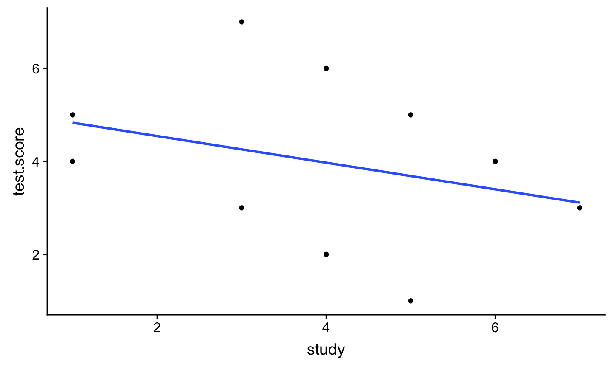
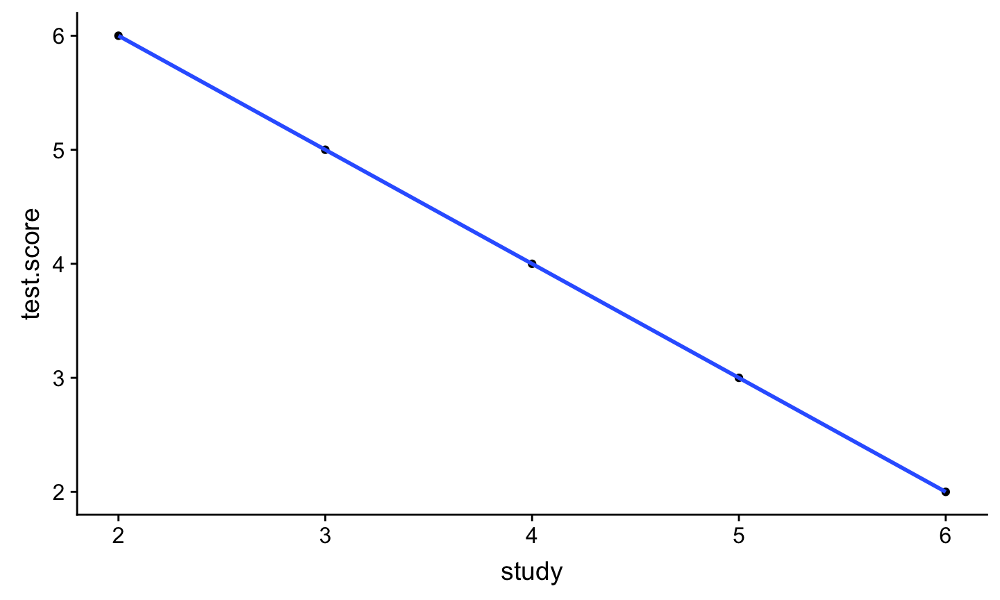
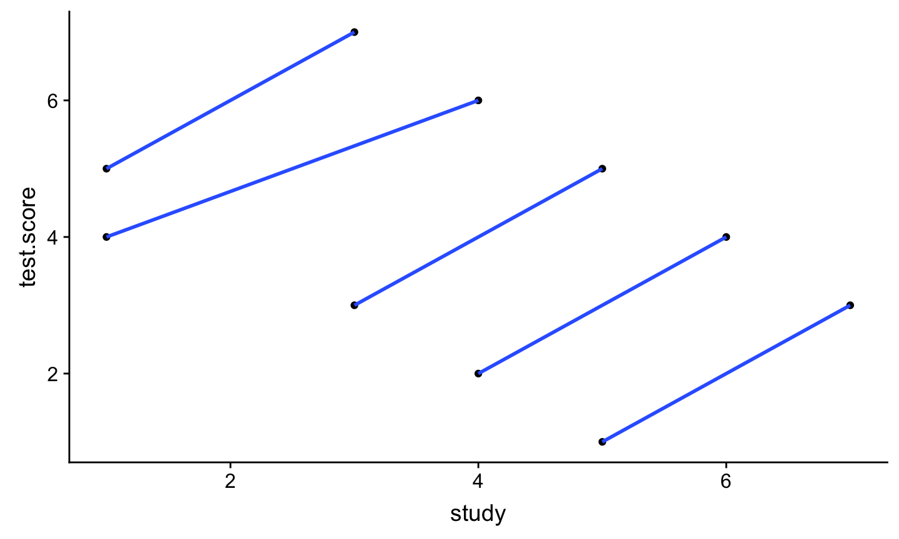
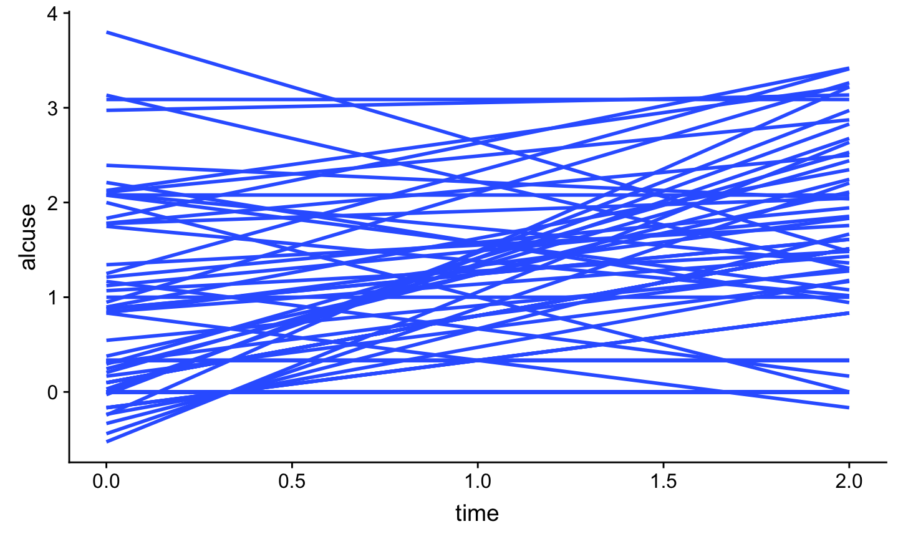
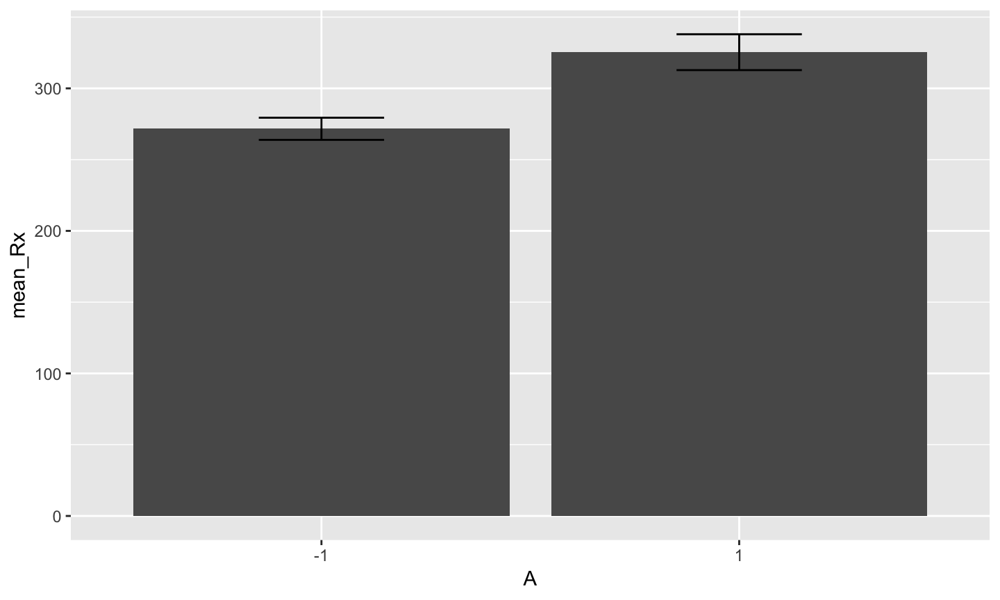

- We might want to assess people more than once
- We might want to assess within groups/nested structures
| ID | wine #1 | #2 | #3 | #4 | Mean |
|---|---|---|---|---|---|
| 1 | 2 | 5 | 3 | 3 | 3.25 |
| 2 | 4 | 6 | 5 | 4 | 4.75 |
| 3 | 5 | 7 | 4 | 5 | 5.25 |
| 4 | 3 | 4 | 3 | 4 | 3.5 |
| 5 | 6 | 7 | 6 | 5 | 6.0 |
| 6 | 2 | 5 | 4 | 3 | 3.5 |
| 7 | 4 | 5 | 6 | 4 | 4.75 |
| mean | 3.63 | 5.63 | 4.38 | 4.25 |
The sphericity assumption (also known as the homogeneity of variance of differences assumption) assumes the variance of the differences between any two levels of a within subjects factor (e.g,. condition, time) is equivalent
MLM, HLM, mixed models, mixed effects, random effects models, etc.
If you make assumptions and restrictions to this model you can re-create the RM ANOVA
library(tidyverse) simp<- frame_data( ~ID, ~group, ~test.score, ~study, 1,1,5,1, 2,1,7,3, 3,2,4,1, 4,2,6,4, 5,3,3,3, 6,3,5,5, 7,4,2,4, 8,4,4,6, 9,5,1,5, 10,5,3,7)

simp.1<- frame_data( ~ID, ~group, ~test.score, ~study, 1,1,6,2, 2,2,5,3, 3,3,4,4, 4,4,3,5, 5,5,2,6)


Extracurricular activity (EA) and time spent studying
Between person H1: Do students who participate in EA spend more time studying?
Within person H2: When a student is participating in EA, do they spend more time studying (e.g., in-season vs. offseason)?
Notice that H1 and H2 are independent from one another!
\[ \hat{Y}_{i} = b_{0} + b_{1}X_{1} + b_{2}X_{2} + b_{3}X_{3}+...\] - parameters are considered fixed, only one value
- can be thought of as purposefully selected or existing values of a variable; can only generalize to particular values used
what does a random intercept mean?
Lets say we have 10 reaction time trials (i) per person (j) \[ {Y}_{ij} = \beta_{0j} +\varepsilon_{ij} \]
Contrast with if we averaged over people $ {Y}{j} = {0} +_{j}$
Level 1: \[ {Y}_{ij} = \beta_{0j} +\varepsilon_{ij} \]
Level 2: \[ {\beta}_{0j} = \gamma_{00} + U_{0j}\]
Combined: \[ {Y}_{ij} = \gamma_{00} + U_{0j} + \varepsilon_{ij} \]
Level 1: \[ {Y}_{ij} = \beta_{0j} + \beta_{1j}X_{1} + \varepsilon_{ij} \]
Level 2:
\[ {\beta}_{0j} = \gamma_{00} + U_{0j}\]
\[ {\beta}_{1j} = \gamma_{10} \]
Putting it together: \[ {Y}_{ij} = \gamma_{00} + \gamma_{10} (X_{1})+ U_{0j} + \varepsilon_{ij} \]
Level 1: \[ {Y}_{ij} = \beta_{0j} + \beta_{1j}(X_{1}) + \varepsilon_{ij} \]
Level 2:
\[ {\beta}_{0j} = \gamma_{00} + U_{0j}\]
\[ {\beta}_{1j} = \gamma_{10} + U_{1j} \]
Putting it together: \[ {Y}_{ij} = \gamma_{00} + \gamma_{10}(X_{1})+ U_{0j} + U_{1j} (X_{1})+ \varepsilon_{ij} \]
Level 1: \[ {Y}_{ij} = \beta_{0j} +\varepsilon_{ij} \]
Level 2: \[ {\beta}_{0j} = \gamma_{00} + U_{0j}\]
Combined: \[ {Y}_{ij} = \gamma_{00} + U_{0j} + \varepsilon_{ij} \]
ICC:
\[\frac{U_{0j}}{U_{0j}+ \varepsilon_{ij}}\]
alcohol1
## # A tibble: 246 x 9 ## id age coa male age_14 alcuse peer cpeer ccoa ## <dbl> <dbl> <dbl> <dbl> <dbl> <dbl> <dbl> <dbl> <dbl> ## 1 1 14 1 0 0 1.73 1.26 0.247 0.549 ## 2 1 15 1 0 1 2 1.26 0.247 0.549 ## 3 1 16 1 0 2 2 1.26 0.247 0.549 ## 4 2 14 1 1 0 0 0.894 -0.124 0.549 ## 5 2 15 1 1 1 0 0.894 -0.124 0.549 ## 6 2 16 1 1 2 1 0.894 -0.124 0.549 ## 7 3 14 1 1 0 1 0.894 -0.124 0.549 ## 8 3 15 1 1 1 2 0.894 -0.124 0.549 ## 9 3 16 1 1 2 3.32 0.894 -0.124 0.549 ## 10 4 14 1 1 0 0 1.79 0.771 0.549 ## # … with 236 more rows
library(lme4) model.1 <- lmer(alcuse~ 1 + (1 | id), data = alcohol1) summary(model.1)
## Linear mixed model fit by REML ['lmerMod'] ## Formula: alcuse ~ 1 + (1 | id) ## Data: alcohol1 ## ## REML criterion at convergence: 673 ## ## Scaled residuals: ## Min 1Q Median 3Q Max ## -1.8892 -0.3079 -0.3029 0.6111 2.8562 ## ## Random effects: ## Groups Name Variance Std.Dev. ## id (Intercept) 0.5731 0.7571 ## Residual 0.5617 0.7495 ## Number of obs: 246, groups: id, 82 ## ## Fixed effects: ## Estimate Std. Error t value ## (Intercept) 0.9220 0.0963 9.574
library(reghelper) ICC(model.1)
## [1] 0.5050172
library(sjPlot)
# sjp.lmer(model.1, facet.grid = FALSE,
sort = "sort.all")
model.2 <- lmer(alcuse ~ time + (1 | id), data = alcohol1) summary(model.2)
## Linear mixed model fit by REML ['lmerMod'] ## Formula: alcuse ~ time + (1 | id) ## Data: alcohol1 ## ## REML criterion at convergence: 654.1 ## ## Scaled residuals: ## Min 1Q Median 3Q Max ## -2.19816 -0.66940 0.03001 0.44728 2.66167 ## ## Random effects: ## Groups Name Variance Std.Dev. ## id (Intercept) 0.5966 0.7724 ## Residual 0.4915 0.7011 ## Number of obs: 246, groups: id, 82 ## ## Fixed effects: ## Estimate Std. Error t value ## (Intercept) 0.65130 0.11077 5.880 ## time 0.27065 0.05474 4.944 ## ## Correlation of Fixed Effects: ## (Intr) ## time -0.494
# sjp.lmer(model.2, type="fe")
model.3 <- lmer(alcuse ~ time + (1 + time| id), data = alcohol1) summary(model.3) ## Fixed effects are outside of the parenthesis ## and the random effects are inside
## Warning in checkConv(attr(opt, "derivs"), opt$par, ctrl = ## control$checkConv, : Model failed to converge with max|grad| = 0.00986507 ## (tol = 0.002, component 1)
## Linear mixed model fit by REML ['lmerMod'] ## Formula: alcuse ~ time + (1 + time | id) ## Data: alcohol1 ## ## REML criterion at convergence: 643.2 ## ## Scaled residuals: ## Min 1Q Median 3Q Max ## -2.48441 -0.37859 -0.07889 0.38922 2.49339 ## ## Random effects: ## Groups Name Variance Std.Dev. Corr ## id (Intercept) 0.6361 0.7976 ## time 0.1553 0.3941 -0.23 ## Residual 0.3369 0.5805 ## Number of obs: 246, groups: id, 82 ## ## Fixed effects: ## Estimate Std. Error t value ## (Intercept) 0.65130 0.10575 6.159 ## time 0.27065 0.06284 4.307 ## ## Correlation of Fixed Effects: ## (Intr) ## time -0.440 ## convergence code: 0 ## Model failed to converge with max|grad| = 0.00986507 (tol = 0.002, component 1)
library(lmerTest) summary(model.3) #gives you p-values, if you really want it
# sjp.lmer(model.3)
ggplot(alcohol1, aes(x = time, y = alcuse, group = id)) + stat_smooth(method = "lm", se = FALSE)

model.4 <- lmer(alcuse~ time + coa + coa*time + (time | id), data = alcohol1) summary(model.4)
## Linear mixed model fit by REML ['lmerMod'] ## Formula: alcuse ~ time + coa + coa * time + (time | id) ## Data: alcohol1 ## ## REML criterion at convergence: 631.9 ## ## Scaled residuals: ## Min 1Q Median 3Q Max ## -2.5522 -0.3827 -0.1063 0.3585 2.3707 ## ## Random effects: ## Groups Name Variance Std.Dev. Corr ## id (Intercept) 0.5069 0.7119 ## time 0.1586 0.3982 -0.23 ## Residual 0.3373 0.5808 ## Number of obs: 246, groups: id, 82 ## ## Fixed effects: ## Estimate Std. Error t value ## (Intercept) 0.31595 0.13232 2.388 ## time 0.29296 0.08527 3.436 ## coa 0.74321 0.19699 3.773 ## time:coa -0.04943 0.12695 -0.389 ## ## Correlation of Fixed Effects: ## (Intr) time coa ## time -0.460 ## coa -0.672 0.309 ## time:coa 0.309 -0.672 -0.460
tidy(model.4)
## Warning in bind_rows_(x, .id): binding factor and character vector, ## coercing into character vector
## Warning in bind_rows_(x, .id): binding character and factor vector, ## coercing into character vector
## # A tibble: 8 x 5 ## term estimate std.error statistic group ## <chr> <dbl> <dbl> <dbl> <chr> ## 1 (Intercept) 0.316 0.132 2.39 fixed ## 2 time 0.293 0.0853 3.44 fixed ## 3 coa 0.743 0.197 3.77 fixed ## 4 time:coa -0.0494 0.127 -0.389 fixed ## 5 sd_(Intercept).id 0.712 NA NA id ## 6 sd_time.id 0.398 NA NA id ## 7 cor_(Intercept).time.id -0.229 NA NA id ## 8 sd_Observation.Residual 0.581 NA NA Residual
what does this look like for group effects?
example
## Subject A Reaction ## 1 308 -1 249.5600 ## 2 308 -1 258.7047 ## 3 308 -1 250.8006 ## 4 308 -1 321.4398 ## 5 308 -1 356.8519 ## 6 308 1 414.6901 ## 7 308 1 382.2038 ## 8 308 1 290.1486 ## 9 308 1 430.5853 ## 10 308 1 466.3535 ## 11 309 -1 222.7339 ## 12 309 -1 205.2658 ## 13 309 -1 202.9778 ## 14 309 -1 204.7070 ## 15 309 -1 207.7161 ## 16 309 1 215.9618 ## 17 309 1 213.6303 ## 18 309 1 217.7272 ## 19 309 1 224.2957 ## 20 309 1 237.3142 ## 21 310 -1 199.0539 ## 22 310 -1 194.3322 ## 23 310 -1 234.3200 ## 24 310 -1 232.8416 ## 25 310 -1 229.3074 ## 26 310 1 220.4579 ## 27 310 1 235.4208 ## 28 310 1 255.7511 ## 29 310 1 261.0125 ## 30 310 1 247.5153 ## 31 330 -1 321.5426 ## 32 330 -1 300.4002 ## 33 330 -1 283.8565 ## 34 330 -1 285.1330 ## 35 330 -1 285.7973 ## 36 330 1 297.5855 ## 37 330 1 280.2396 ## 38 330 1 318.2613 ## 39 330 1 305.3495 ## 40 330 1 354.0487 ## 41 331 -1 287.6079 ## 42 331 -1 285.0000 ## 43 331 -1 301.8206 ## 44 331 -1 320.1153 ## 45 331 -1 316.2773 ## 46 331 1 293.3187 ## 47 331 1 290.0750 ## 48 331 1 334.8177 ## 49 331 1 293.7469 ## 50 331 1 371.5811 ## 51 332 -1 234.8606 ## 52 332 -1 242.8118 ## 53 332 -1 272.9613 ## 54 332 -1 309.7688 ## 55 332 -1 317.4629 ## 56 332 1 309.9976 ## 57 332 1 454.1619 ## 58 332 1 346.8311 ## 59 332 1 330.3003 ## 60 332 1 253.8644 ## 61 333 -1 283.8424 ## 62 333 -1 289.5550 ## 63 333 -1 276.7693 ## 64 333 -1 299.8097 ## 65 333 -1 297.1710 ## 66 333 1 338.1665 ## 67 333 1 332.0265 ## 68 333 1 348.8399 ## 69 333 1 333.3600 ## 70 333 1 362.0428 ## 71 334 -1 265.4731 ## 72 334 -1 276.2012 ## 73 334 -1 243.3647 ## 74 334 -1 254.6723 ## 75 334 -1 279.0244 ## 76 334 1 284.1912 ## 77 334 1 305.5248 ## 78 334 1 331.5229 ## 79 334 1 335.7469 ## 80 334 1 377.2990 ## 81 335 -1 241.6083 ## 82 335 -1 273.9472 ## 83 335 -1 254.4907 ## 84 335 -1 270.8021 ## 85 335 -1 251.4519 ## 86 335 1 254.6362 ## 87 335 1 245.4523 ## 88 335 1 235.3110 ## 89 335 1 235.7541 ## 90 335 1 237.2466 ## 91 337 -1 312.3666 ## 92 337 -1 313.8058 ## 93 337 -1 291.6112 ## 94 337 -1 346.1222 ## 95 337 -1 365.7324 ## 96 337 1 391.8385 ## 97 337 1 404.2601 ## 98 337 1 416.6923 ## 99 337 1 455.8643 ## 100 337 1 458.9167 ## 101 349 -1 236.1032 ## 102 349 -1 230.3167 ## 103 349 -1 238.9256 ## 104 349 -1 254.9220 ## 105 349 -1 250.7103 ## 106 349 1 269.7744 ## 107 349 1 281.5648 ## 108 349 1 308.1020 ## 109 349 1 336.2806 ## 110 349 1 351.6451 ## 111 350 -1 256.2968 ## 112 350 -1 243.4543 ## 113 350 -1 256.2046 ## 114 350 -1 255.5271 ## 115 350 -1 268.9165 ## 116 350 1 329.7247 ## 117 350 1 379.4445 ## 118 350 1 362.9184 ## 119 350 1 394.4872 ## 120 350 1 389.0527 ## 121 351 -1 250.5265 ## 122 351 -1 300.0576 ## 123 351 -1 269.8939 ## 124 351 -1 280.5891 ## 125 351 -1 271.8274 ## 126 351 1 304.6336 ## 127 351 1 287.7466 ## 128 351 1 266.5955 ## 129 351 1 321.5418 ## 130 351 1 347.5655 ## 131 352 -1 221.6771 ## 132 352 -1 298.1939 ## 133 352 -1 326.8785 ## 134 352 -1 346.8555 ## 135 352 -1 348.7402 ## 136 352 1 352.8287 ## 137 352 1 354.4266 ## 138 352 1 360.4326 ## 139 352 1 375.6406 ## 140 352 1 388.5417 ## 141 369 -1 271.9235 ## 142 369 -1 268.4369 ## 143 369 -1 257.2424 ## 144 369 -1 277.6566 ## 145 369 -1 314.8222 ## 146 369 1 317.2135 ## 147 369 1 298.1353 ## 148 369 1 348.1229 ## 149 369 1 340.2800 ## 150 369 1 366.5131 ## 151 370 -1 225.2640 ## 152 370 -1 234.5235 ## 153 370 -1 238.9008 ## 154 370 -1 240.4730 ## 155 370 -1 267.5373 ## 156 370 1 344.1937 ## 157 370 1 281.1481 ## 158 370 1 347.5855 ## 159 370 1 365.1630 ## 160 370 1 372.2288 ## 161 371 -1 269.8804 ## 162 371 -1 272.4428 ## 163 371 -1 277.8989 ## 164 371 -1 281.7895 ## 165 371 -1 279.1705 ## 166 371 1 284.5120 ## 167 371 1 259.2658 ## 168 371 1 304.6306 ## 169 371 1 350.7807 ## 170 371 1 369.4692 ## 171 372 -1 269.4117 ## 172 372 -1 273.4740 ## 173 372 -1 297.5968 ## 174 372 -1 310.6316 ## 175 372 -1 287.1726 ## 176 372 1 329.6076 ## 177 372 1 334.4818 ## 178 372 1 343.2199 ## 179 372 1 369.1417 ## 180 372 1 364.1236

ex.1 <- lmer(Reaction ~ 1 + (1|Subject), data = example) summary(ex.1)
## Linear mixed model fit by REML ['lmerMod'] ## Formula: Reaction ~ 1 + (1 | Subject) ## Data: example ## ## REML criterion at convergence: 1904.3 ## ## Scaled residuals: ## Min 1Q Median 3Q Max ## -2.4983 -0.5501 -0.1476 0.5123 3.3446 ## ## Random effects: ## Groups Name Variance Std.Dev. ## Subject (Intercept) 1278 35.75 ## Residual 1959 44.26 ## Number of obs: 180, groups: Subject, 18 ## ## Fixed effects: ## Estimate Std. Error t value ## (Intercept) 298.51 9.05 32.98
library(sjPlot)
#sjp.lmer(ex.1, facet.grid = FALSE,
sort = "sort.all")
reghelper::ICC(ex.1)
## [1] 0.3948898
ex.2 <- lmer(Reaction ~ A + (1|Subject), data = example) summary(ex.2)
## Linear mixed model fit by REML ['lmerMod'] ## Formula: Reaction ~ A + (1 | Subject) ## Data: example ## ## REML criterion at convergence: 1813.8 ## ## Scaled residuals: ## Min 1Q Median 3Q Max ## -2.5154 -0.6952 0.0217 0.6144 3.5380 ## ## Random effects: ## Groups Name Variance Std.Dev. ## Subject (Intercept) 1358 36.85 ## Residual 1163 34.11 ## Number of obs: 180, groups: Subject, 18 ## ## Fixed effects: ## Estimate Std. Error t value ## (Intercept) 271.630 9.400 28.90 ## A1 53.755 5.085 10.57 ## ## Correlation of Fixed Effects: ## (Intr) ## A1 -0.270
how can you think of this graphically?
ex.3 <- lmer(Reaction ~ A + (A|Subject), data = example) summary(ex.3)
## Linear mixed model fit by REML ['lmerMod'] ## Formula: Reaction ~ A + (A | Subject) ## Data: example ## ## REML criterion at convergence: 1787.3 ## ## Scaled residuals: ## Min 1Q Median 3Q Max ## -3.3007 -0.5091 -0.0314 0.4551 3.8663 ## ## Random effects: ## Groups Name Variance Std.Dev. Corr ## Subject (Intercept) 749.1 27.37 ## A1 975.2 31.23 0.46 ## Residual 905.9 30.10 ## Number of obs: 180, groups: Subject, 18 ## ## Fixed effects: ## Estimate Std. Error t value ## (Intercept) 271.630 7.189 37.785 ## A1 53.755 8.620 6.236 ## ## Correlation of Fixed Effects: ## (Intr) ## A1 0.188
ranef(ex.3)
## $Subject ## (Intercept) A1 ## 308 21.7019920 42.407315 ## 309 -55.2428019 -44.640574 ## 310 -45.8928542 -33.269923 ## 330 11.6391798 -19.841564 ## 331 16.6575039 -18.863738 ## 332 4.6913460 7.716506 ## 333 13.5914343 4.514921 ## 334 -4.4328004 4.341370 ## 335 -22.2294260 -51.988948 ## 337 49.5022719 45.908883 ## 349 -20.2344170 1.492485 ## 350 -1.3745363 38.016890 ## 351 -1.6482370 -14.837734 ## 352 28.9498380 12.621214 ## 369 5.2872561 3.261798 ## 370 -15.1363095 24.261603 ## 371 0.7331579 -9.958333 ## 372 13.4374024 8.857830 ## ## with conditional variances for "Subject"
#sjp.lmer(ex.3)
how can you think of this graphically?